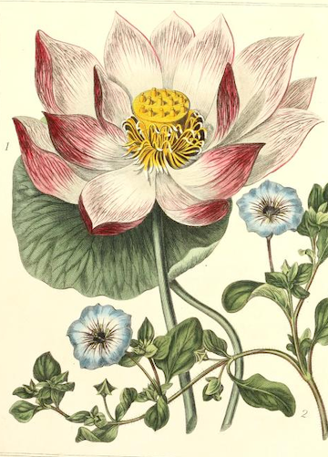
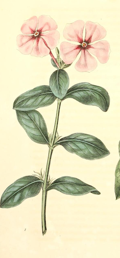

-
1. Daphne
I Desire to Please
Quote about first flower
In one of the more famous Greek myths pertaining to youth-transformed-into-plant, the Daphne bloom derives its name from a greek dryad (or tree spirit) who fell victim to a vengeance plot concocted by Eros against Apollo. He shot two arrows: the first struck Apollo and filled him with a desperate desire for Daphne, and the second struck Daphne herself, giving her a violent aversion to all things romantic. Apollo pursued Daphne until she could physically no longer escape, and after a quick prayer to her father river god father, Peneus, she found herself transformed into the laurel tree. Apollo adorned himself with branches from this new tree, and adopted it as his special symbol. Even now, the Daphne bloom is associated with an overtly feminine desire to please.
In non-Western cultures, the Daphne bloom also holds a vital space. In Chinese medicine, the blooms can be used to ease back pain, and in paper-making techniques of Bhutan and Nepal.

-

2. Lotus
Elegance
Quote about first flower
-
3. Meadowsweet
Uselessness
Quote about first flower

-

4. Periwinkle
Early Friendship
Quote about first flower
-
5. Rudbeckia
Love Conquers All
Quote about first flower